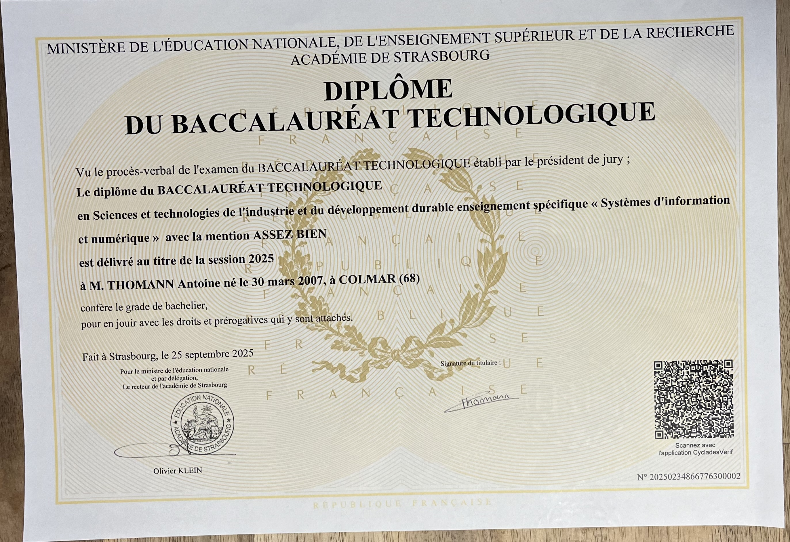

Recherche alternance – Parcours Cybersécurité
📍 Colmar
📞 06 64 11 90 61
Âgé de 18 ans et actuellement étudiant en première année de BUT Réseaux et Télécommunications à l’IUT de Colmar, je prépare activement mon orientation vers le parcours de spécialisation en Cybersécurité. Dans le cadre de ma formation, je recherche désormais une alternance pour ma deuxième année, avec l'ambition d'ancrer mes apprentissages théoriques dans la réalité technique d'une entreprise.
Passionné par l’informatique et plus précisément par la cybersécurité, je suis particulièrement motivé par les enjeux de la prévention contre les cyberattaques et la protection des données. Ce domaine me passionne par sa complexité et son évolution constante, ce qui exige une veille permanente et une grande rigueur.
Site web de l'entreprise - Visiter le site web 🔗
Baccalauréat Technologique STI2D
Lycée Théodore Deck (obtenue en 2025)
